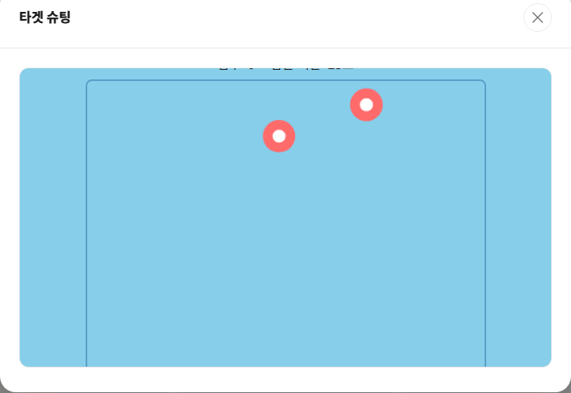

타겟 슈팅은 30초 동안 화면에 무작위로 나타났다 사라지는 타겟을 클릭(또는 터치)해서 점수를 쌓는 반응속도 게임입니다. 짧은 시간에 승부가 나기 때문에 부담 없이 여러 번 도전해볼 수 있습니다.

기본 규칙
- 제한 시간은 30초이며, 타겟은 나타난 뒤 일정 시간이 지나면 사라집니다.
- 일반 타겟(빨간색)을 맞히면 10점을 얻습니다.
- 가끔 나타나는 황금 타겟(노란색)을 맞히면 30점을 얻습니다.
- 시간이 지날수록 타겟이 더 자주, 더 빠르게 나타납니다.
고득점 팁
1. 황금 타겟을 우선순위로 두세요
일반 타겟보다 3배 높은 점수를 주는 황금 타겟은 등장 확률이 낮은 만큼, 화면에 보이는 순간 다른 타겟보다 먼저 클릭하는 것이 총점을 높이는 가장 확실한 방법입니다.
2. 화면 중앙에 시선을 고정하세요
타겟은 화면 전체에 무작위로 나타나므로, 한쪽 구석만 보고 있으면 반대편에 나타난 타겟을 놓치기 쉽습니다. 화면 중앙에 시선을 두고 주변 시야로 전체를 살피는 편이 반응 속도에 유리합니다.
3. 후반부일수록 클릭을 서두르세요
시간이 지날수록 타겟이 사라지는 속도도 빨라집니다. 게임 후반에는 타겟이 뜨자마자 거의 반사적으로 클릭한다는 느낌으로 플레이해야 점수 손실을 줄일 수 있습니다.
30초 안에 몇 점까지 낼 수 있는지 직접 확인해보고 싶다면 게임 목록에서 타겟 슈팅을 플레이해 보세요.